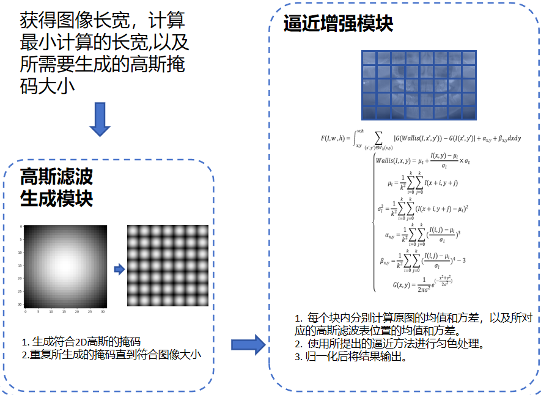
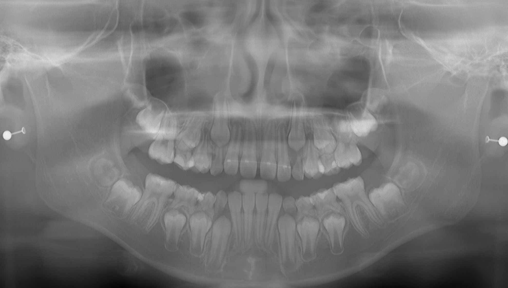
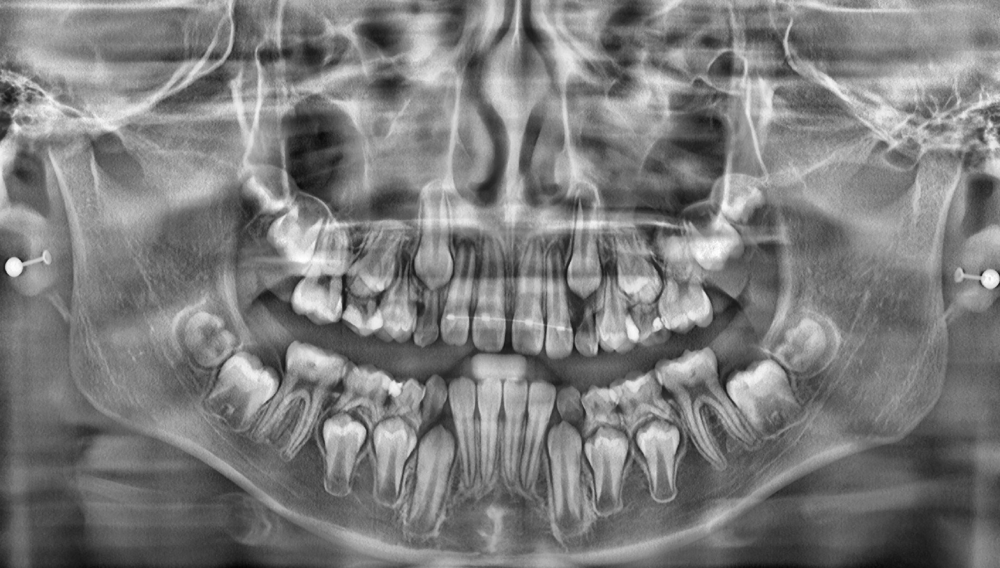

I am an Algorithm Engineer at Fussen Technology Co., Ltd., where I have been working for over two years. Prior to joining Fussen, I earned my Master’s degree in Computer Science from China Three Gorges University, and my Bachelor’s degree in the same field from Henan Normal University.
My research focuses on Medical Image Enhancement, including Denoising, Super-Resolution, CT-Reconstruction(NeRF,3DGS). And also interested in leveraging Structure from Motion (SfM) to enhance human motion analysis.
Announcement: I am actively seeking cooperation opportunities and would be delighted to discuss how my expertise can benefit your team.
Google Scholar / Github / Email: 407157175@qq.com

思之而艺之，登峰造极
全景影像去噪超分增强项目23.10 - 25.10
面向 CBCT全景模式 的自适应噪声抑制模型，同时利用超分模型显著提升影像质量，增强对比度
CBCT 全景图像会受到散射噪声等干扰，使组织纹理被削弱、噪声覆盖、对比度下降等，从而影响医生病灶识别。 项目目标是构建一套能够适应不同噪声分布的高保真医学图像去噪，并确保对关键结构（如牙齿牙釉质牙本质分界线、骨小梁清晰度、关节对比度、金属植体边界等部分） 的保留与恢复能力。
难点（Challenges）
- 去噪过平滑导致清晰度的下降
- 牙齿根管清晰度会因为去噪过度平滑导致清晰度下降
- 植体样本螺纹清晰度下降
- 上颌及鼻腔部分清晰度下降
- 去噪过平滑导致对比度的下降
- 过曝区域（如关节间隙、上腭硬区等高密度结构）的动态范围适应性不足，导致处理后局部出现异常高亮斑块
- 非均匀性亮度异常，部分骨小梁结构呈现过度增强（亮度显著高于周围正常骨组织），而相邻骨小梁的亮度则保持相对正常，形成斑片状高亮
- 牙冠杂质过度平滑导致牙冠区域过白
- 牙周膜等间隙空气区域变更黑，一些过度区域被截断
- 去噪不均匀导致伪影残留
- 背景噪声相比颌骨表面更容易去除，导致颌骨表现与周围反差过大
- 影像质量进一步要求
- 要求整体表现一种金属光泽感，透亮，边界清晰。
问题分析（Decoupling and Analysis）
- 去噪过平滑导致清晰度的下降
- 传统算法聚焦于均匀化处理，将其作为标签导致过渡区域模糊化与结构细节丢失问题，同时噪声以及杂质能够增强边界梯度感知和真实感，完美去除会导致整体失真。
- 去噪过平滑导致对比度的下降
- 模型在处理中表现出动态范围压缩倾向，具体表现为：高密度区域（如骨皮质、金属修复体）的像素值被过度增强，呈现"白化"效应；低密度区域（如软组织、空气腔）则被进一步抑制，呈现"黑化"效应。类似于Sigmoid函数的饱和效应——在输入信号超出阈值范围时，输出梯度急剧衰减。
- 去噪不均匀导致伪影残留
- 模型学习过程中，其难以有效处理分布强度范围之外的噪声，特别是当某些局部随机噪声的强度完全超出训练阶段所采用的数据增强范围时，模型性能会受到显著影响。瓦片推理方式同时进一步加剧问题。
模型性能对比（Performance Comparison）
| Method | L1 | MSE | RMSE | SSIM | PSNR | Param / FLOPs |
|---|---|---|---|---|---|---|
| Origin Noise | 0.0905 | 0.0275 | 0.1658 | 0.2594 | 17.4639 | – |
| UNet | 0.0370 | 0.0043 | 0.0589 | 0.8201 | 25.3405 | 143MB / 52.03G |
| WaveMix | 0.0470 | 0.0083 | 0.0789 | 0.5457 | 23.1098 | 6.52MB / 79.22G |
| N2N | 0.0323 | 0.0040 | 0.0561 | 0.7133 | 23.8673 | 3.82MB / 8.64G |
| RED | 0.0799 | 0.0167 | 0.1153 | 0.6630 | 19.6097 | 7.05MB / 83.12G |
| Ours* | 0.0021 | 0.0025 | 0.0493 | 0.7519 | 26.2308 | 114MB / 62.40G |
解决方案 / 创新点（Solutions / Innovations）
- Unet、RED、N2N、WaveMix、R2R实验验证，简单的模型改动无法达到严格的医学图像的需求，构建拉普拉斯金字塔和图像金字塔结构模型，同时使用小波分解和多头注意力以及一个特征采样注意力模块构建层与层的特征融合，学习各向异性的噪声频率下的特征结构，预测噪声结构增强模型收敛效果。
- 传统 CLAHE 虽能提升整体对比度，但其基于 tile 的局部直方图均衡会在高亮区域引入两个问题：首先，由于局部直方图被强制展宽，金属高光区域原本连续的亮度梯度被削弱，使光泽结构变得平坦；其次，各 tile 之间的边界不具备空间连续性，导致明显的块状伪影，进一步破坏高光区的自然过渡。这类失真特别容易出现在植体高亮与周围组织的过渡区域，导致金属光泽无法真实呈现。为解决上述问题，提出基于高斯核的局部加权增强方法。与 CLAHE 的硬分块不同，高斯核提供了连续的空间权重分布，使增强作用在局部范围内平滑衰减，从而保留金属高光区域的梯度结构和亮度变化的连续性。此外，我们采用 Wallis 局部自适应公式对局部亮度均值与对比度进行调节，使增强结果在全图范围内趋向统一的亮度与对比度标准。与直方图均衡式的强制拉伸不同，Wallis 通过统计量匹配的方式适度提升高光区域的局部对比度，同时避免对非高亮区域造成过度增强。在两者结合下，高亮区的局部梯度得以有效保持，并在可控范围内得到增强，从而使金属光泽呈现更自然的亮度衰减与反射特性；同时，由于空间权重连续，块效应明显减少，整体结构细节也得以保持。实验结果表明，该方法在不牺牲周围组织结构真实感的前提下，能够显著提升金属植体表面的光泽表现。
- pass
PipLine
Origin
Wallis-Gaussian

CLAHE
结果（Results）
- PSNR 提升 12 dB
- SSIM 达到 0.92
- 在医院影像部门进行小规模测试并获得认可
Before

After


医学图像超分辨率重建 22.10 - 23.10
提升低分辨率医学图像质量，提升临床诊断精度
超声、低剂量 CT 等医学数据常存在分辨率不足的问题， 会影响血管、器官边缘的识别和测量。 本项目致力于构建支持 3D 体积数据的超分辨率模型， 用于提升临床图像整体质量。
难点（Challenges）
- 3D 卷积模型训练显存占用极高
- 需要保持体积数据的时序一致性
- 容易出现伪影，影响临床测量可靠性
解决方案 / 创新点（Solutions / Innovations）
- 将 ESRGAN 架构拓展到 3D 卷积，提升体积结构捕获能力
- 采用渐进式训练策略减少显存消耗
- 引入 perceptual loss 抑制伪影、增强复原质量
结果（Results）
ul class="styled-list">Before
After
基于 NeRF 的稀疏视角 CT 重建22.10 - 23.10
利用 NeRF + 3DGS 重建稀疏投影下的高质量 CT 影像
在低剂量扫描条件下，CT 投影视角稀疏，导致重建图像结构模糊或失真， 本项目使用 NeRF 构建连续场景表示，通过 3DGS 提升训练效率， 实现稀疏视角下的高质量 CT 重建。
难点（Challenges）
- NeRF 原生训练速度非常慢
- 医学场景要求极高的细节恢复能力
- 稀疏投影带来严重的信息缺失
解决方案 / 创新点（Solutions / Innovations）
- 采用 3D Gaussian Splatting 替代传统体素渲染，提高 5 倍训练速度
- 设计多尺度损失函数，强化高频细节重建效果
- 引入视角补全模块，提高稀疏投影下的数据一致性
结果（Results）
- LoDoPaB 数据集 SSIM 达 0.95
- 辐射剂量降低 60% 仍保持可诊断质量
- 相比传统方法在稀疏视角下表现更稳定
Before
After

Kanglei Zhou, Junlin Li, Ruizhi Cai, Liyuan Wang, Xingxing Zhang, Xiaohui Liang
International Joint Conference on Artificial Intelligence, IJCAI, 2024.(CCF A)


Junlin Li, Weixin Tian, Junliang Li, Yuan He, Wanglin Ke
MICCAI STS, 2023.(CCF B workshop)


Ronghuan Yan, Junlin Li, Weixin Tian, Nyasha Mkwanda
Published in Research in Astronomy and Astrophysics, RAA, 2025. Q3. 中科院3区. IF 1.8


Guoqi Liu, Lu Bai, Junlin Li, Linyuan Ru, Baofang Chang
IET Image Processing, 2022. Q2. 中科院4区. IF 2.2
Last updated in Feb. 2025. Template adapted from Siwei Zhang's and Qianli Ma's websites.